横浜国立大学工学部第四寮
第６回弘南寮ゴルフ大会
時 ： 平成２０年１１月７日(金）
所 ： 伊東カントリークラブ 静岡県伊東市荻６９４−１
宿泊 ： 伊東小湧園ホテル
| 前回の麻生カントリー大会で、日帰りゴルフばかりでは何となく味気ないので、次回は泊りがけでゆったりやりたいとの声が出て、今回は伊東小湧園ホテル泊り、伊東カントリーでのゴルフとなった。 幹事役の山之内さんには、天気の心配も含め大変ご苦労戴き、誠に有難うございました。 |
| 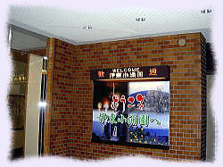 | 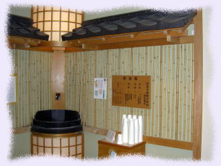 | |
| 伊東小湧園ホテル 玄関 | 飲める 温泉 |
伊東カントリークラブ
| 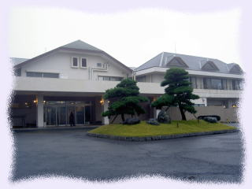 | 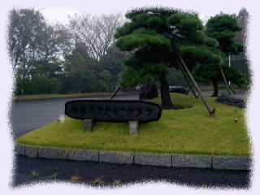 | 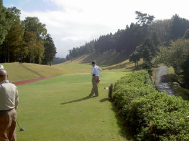 | |
| 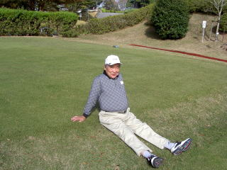 |
| 伊東小涌園からタクシーで相当急な山道を登ること約２０分、殆ど平地のない山また山のこんな高い所に、よくもこんなゴルフ場を作ったものだと、作った人の想像力に脱帽する思いの凄いコ-スでした。 どうしたことか当日の前後は良い天気なのに、１１月７日だけは曇り／雨 の予報でヤレヤレと思っていたところ、幸い雨にはならなかったものの、我々がスタートした途端に急に霧が巻き始めた。
出だし IN の１０番、スタート順の写真と、第２打地点での 証拠写真をご覧下さい。
|
| 第１打を打つ頃から急激に霧が発生して見る間にコースを覆い尽くし、第２打地点からはグリーンは全く見えず、グリーン迄の距離はおろか方角さえ分らぬ状況。どっちを向いて打ったらよいのか分らぬ中、乗用カートのレシーバーの指示や、コースに配備された係員の助言で霧の幕の中に打っていくのは誠に心細いものです。 はっきり見えていても球探しは苦労するもの、打った途端に見えなくなる球がどの辺に飛んだのか、全くの勘頼みではコレはもうゴルフじゃないね。それでも ６−７ホール目あたりから徐々に晴れ始めて、その後は雲ひとつ無い好天になり、誠に得難い経験になりました。 初めての一泊ゴルフ巡業でしたが、車がないと心おきなく酒が飲めるのが何よりです。
|
|---|
１０番ホールから スタート
| 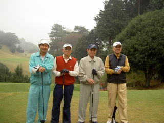 | 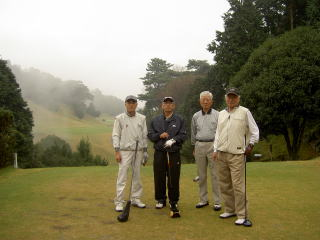 |
| 第一組 | 第二組 |
| 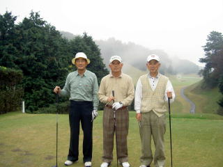 | 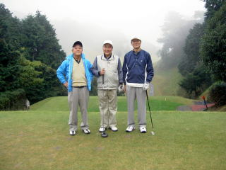 |
| 第三組 | 第４組 |
昼食風景
| 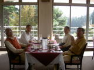 | 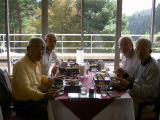 | 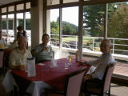 | 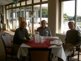 |
| 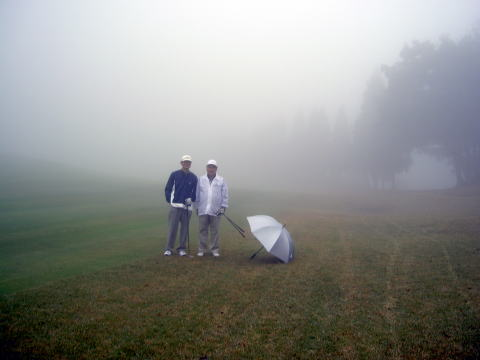 | 霧の１０番ホール 第２打地点、グリーンまで約 １５０ヤード、右側奥のうっすら見える木の下あたりがグリーン。 モデルは 村上さん(右）と 外池さん(左) |
| 表彰式 ＆ 反省会 |
|---|
| 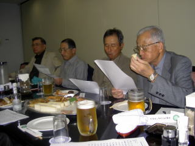 | 当日の成績 ： Gross Total Hdcp Net Out In 優勝 外池久雄 39 50 89 19.0 70.0 ２位 猪原暉雄 48 53 101 31.0 70.0 ３位 竹内哲夫 44 49 93 21.0 72.0 Best Gross 野村安広 39 45 84 |
|
折角の反省会であったが、帰りの電車時間、それに合わせたクラブバスのスケジュールに急かされてソソクサと賞品授与だけ済ませて閉会。 優勝者の挨拶は、後日メールで伝達された。（下記参照下さい） 願わくば電車時間を一本ずらせるなど、もう少し時間がほしかったところです。 |
| 尚、次回大会は、秋山正樹さんが幹事となり、来年 ５月２９日(金） 千葉方面で開催される予定です。 |
| 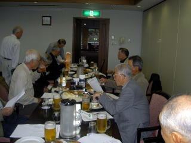 | 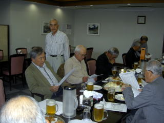 | |
| 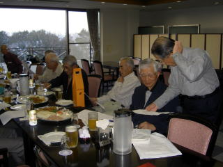 | 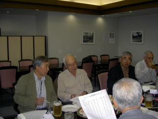 |
| (優勝者の挨拶） |
| 弘南寮ゴルフ会の皆様へ 今日は久し振りの抜けるような秋晴れで皆様もお元気でお過ごしのことと思います。さて先日は楽しいゴルフをすることができまして、その上優勝することもできまして有難う御座いました。処でその後、幹事の山之内さんより優勝者の挨拶がなかったのでメールでしてはいかがかとの連絡がありまして、遅ればせながら皆様にメールを送らせて頂きました。さて今回の優勝の要因は何と言っても、進歩著しい村上さんとパーの数は私より多い猪原さんより刺激を受けたことと思います。パートナーのお陰と感謝します。２番目は前半濃霧のためゴルフにならなかったので、後半はスコアを気にすることなく大きく振りぬくこと、パターは強めにショートしないことだけを念じて無心でプレーしました。特にパ ターが上手く入りました。 処で、あのような 濃霧の中でプレーしたのは初めての経験です。危険防止のため今までは中断しておりました。中止との連絡を待っていたのですが、結果的には止めずに続行して良かったです。ラッキーでした。 |
| さて自己紹介が最後になりましたが、４０年に建築を卒業し、大成建設に３６年、建築業協会に５年、建築コスト管理研究所に２年おりまして今年の６月末でサラリーマン生活を卒業致しました。今後とも宜しくお願い致します。 では朝晩めっきり寒くなってきましたので、風邪など引かぬようどうぞご自愛下さい。 外池 久雄 |
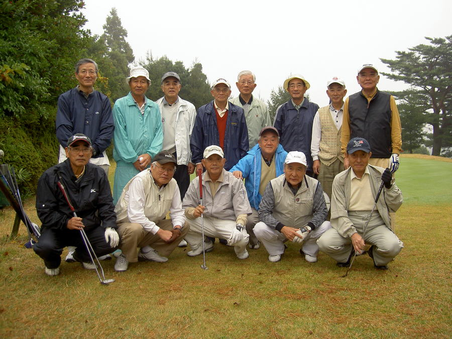
後列左から ： 前列左から ：
外池久雄 ４０−建築 野村慎一 ４０−電工
伊勢本幸雄 ３５−造船 高本幹永 ３４−機械
野村安広 ３７−建築 高石周志 ３６−電工
古市一雄 ３４−機械 猪原暉雄 ３７−造船
山之内克彦 ３４−機械 村上處直 ３５−建築
高橋千穐 ３７−応化 竹内哲夫 ３１−造船
秋山正樹 ３８−建築
中村茂之 ３４−造船